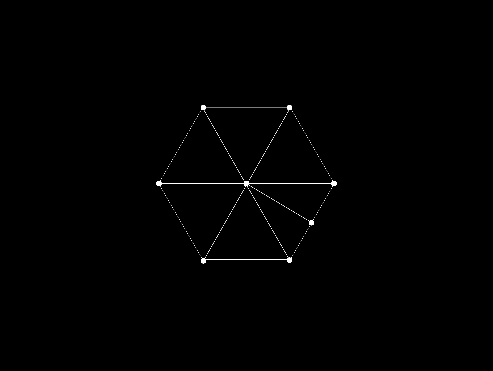

TRY ME
Juguetitos en javascript que hago por placer. Ideas de fin de semana que se llevan a cabo en unas cuantas horas y con el proposito de enseñarle algo nuevo y quemar un poco de su tiempo.
Flocking Infection en p5.js
 |
Flocking Algorythm tomado de Daniel Shiffmann - The coding Train. Se configuran 2 celulas capaces de convertir a las demas por cercanía. |
Camdraw en p5.js + ml5.js
 |
Con la iniciativa Trainable Machine de Google se genera un modelo de red neuronal entrenada con imagenes etiquetadas respectivamente con UP, DOWN, LEFT, RIGHT y STILL segun la pose que represente. Una vez obtenido el modelo entrenado, se implementa librería de Machine Learning ml5 de Javascript para importar el modelo y usarlo para clasificar video en vivo de la webcam y de esta forma darle instrucciones al juego. El objetivo del juego es guiar el viajero Rojo hacia los objetivos azules para crecer y recolectar el mayor numero de puntos posible.Las ordenes se le daran al juego por webcam, traduciendose gracias al modelo a 5 instrucciones basicas: ir arriba, ir abajo, ir a la izquiera, ir a la derecha y no hacer nada. CONTROLES : Para jugar es necesario permitirle a la página usar la webcam pues de esta manera se recolectan las imagenes que traducen a instrucciones. Para que la red neuronal reconozca mejor la pose, es necesario que la webcam enfoque el pecho, la cabeza y los brazos completos.Además, es preciso que el fondo sea uniforme (por ejemplo, una pared lisa). QUEDARSE QUIETO: Quedarse quieto con los brazos abajo. IR ARRIBA:Hacer una "casa" con las manos sobre la cabeza, poniendo las manos por encima de la cabeza en forma de punta hacia arriba. IR ABAJO:Hacer una forma de flacha hacia abajo por debajo de la cara, haciendo una cuna para la mandibula con las manos hacia abajo en forma de punta, tambien alzando los codos. IR A LA IZQUIERDA: poner la mano izquierda al lado de la cara con la palma hacia el frente, como si fuera un saludo. IR A LA DERECHA:poner la mano derecha al lado de la cara con la palma hacia el frente, como si fuera un saludo. |
Imferye en p5.js
| |
Se genera un mapa aleatorio usando Ruido de Perlin incluyendo fuentes de recursos aleatorias en el terreno. La idea del juego es expandir lo más posible el imperio sin que se consuma por su propio tamaño al tener que mantener tantas estaciones. Al comienzo se puede poner un semilla correspondiente a una ciudad grande a partir de la cual se originará el imperio. Cada nueva estación que se ponga en el mapa debe estar conectada a una estación cercana al igual que subirá de nivel a medida que conecte a si misma mas y más estaciones. Despues de lograr poner 5 ciudades grandes, el juego dará más semillas para originar nuevas ciduades grandes sin necesidad de estar conectadas a otros puntos o subir de nivel cualquer estacion a ciudad grande. El rango de conectividad de las estaciones cambia según su rango. CONTROLES : Con click derechose crean nuevas estaciones si estas estan dentro del rango de conexion de otra estación. Si esta muy lejos de cualquier estación y dispone de semillas, hacer click genera una nueva ciudad grande desconectada. con la letra M del teclado cambia la vista de mapas de recursos. con la letra A del teclado se prende y apaga el modo de auto-exloración. |
Slide en mattter.js + p5.js
 |
Experimentando con una nueva librería que permite la creación de objetos físicos.
CONTROLES : La posición de mouse en X determina la tasa de destrucción de objetos aumentando de izquierda a detercha. La posición de mouse en Y determina la tasa de creación de objetos aumentando de abajo hacia arriba. |
Hive en p5.js
| |
Hive es una idea simple: el poder del enjambre. En este escenario se tienen objetos con velocidades propias respecto a la posicion del puntero (mouse). Para adquirir masa , y por ende tamaño, necesitan estar lo más cerca posible de otro objeto; Así cuanto más se comportan en "unidad" más masa tienen la capacidad de adquirir y viceversa, cuanto más se alejen uno de otro más riesgo hay de que desaparezcan. Se tienen dos modos de simulación: en el primero (libre) cada objeto tiene una velocidad resultado de una combinación lineal de las posiciones XY del puntero, es decir que cambiando dicha posicion la velocidad del objeto cambia. en el segundo modo (lider), los objetos seguirán al puntero como si se tratase de un lider. Para rastrear las características de grupo que se tienen en un momento dado, se analizan algunos estadisticos que se muestran en la esquina superior izquierda de la pantalla. Estos dan cuenta de el indice de concentracion de objetos (Focus density), la proporcion de masa respecto a la masa maxima que se puede alcanzar (Mass density) y el porcentaje de objetos que estan existiendo repsecto al total inicial (Existence ratio). Cabe recalcar que una vez el objeto desaparece puede vovler a existir si su posicion hipotetica se enceuntra cerca de la de otro objeto. CONTROLES : La posicion XY del puntero del mouse determina la velocidad de cada objeto, ya sea en modo libre o modo lider. El click cambia el escenario entre los dos modos posibles. |
Red Conexa en p5.js
| |
El cerebro esta compuesto de billones y billones de neuronas, cada una con capacidad de procesar información por señales de manera compartimental y teselada. Las señales viajan a través de una red con conexiones casi que arbitrarias entre neuronas que se extieden indefinidamente. Compuertas lógicas con capacidad de memoria que forman sistemas complejos más allá de nuestro entendimiento. En este ocasión se tiene un sistema aleatorio con cientos de neuronas que se mueven con pulsaciones del ambiente. Establecen conexiones por cercanía con otras neuronas para transportar señales. Si existe un origen para la señal, esta viajara por determinado numero de nodos hasta que finalmente se quede sin suficiente fuera para seguir transmitiendose. CONTROLES : Haciendo CLICK en cualquier neurona se cambia su estado entre activa (origen) e inactiva. |
Caja fuerte en p5.js
| |
En este caso se trata de una serie de candados de combinación que deben ser resueltos con el objetivo de desbloquear una recompensa en el nivel 8. Lo interesante es que la complejidad de los conados crece tan rapido que no es posible llegar al nivel 10 en un tiempo razonable. Funciona asi: Cada nivel tiene un numero de ruedas giratorias con un punto negro que si se alinea en linea reca con los de las otras ruedas permiten abrir el candado. La velocidad angular de las ruedas , es decir su velocidad de giro, depende de una reaccion alatoria a la posición XY del ultimo click en pantalla. De esta forma cada vez que se hace click en diferentes partes de la pantalla, las ruedas cambian su velocidad de giro. Cabe recalcar que cada rueda tiene una respuesta diferente y por ende es imposible sincronizarlas. CONTROLES : Haciendo CLICK en cualquier parte de la pantalla se modifica la velocidad angular de las ruedas como respuesta a la posición XY del click. |
Modelo de Isisng 2D en p5.js
| |
El modelo de Isisng describe el comportamiento de spines vecinos en cuanto a su alineacion dependiendo de parametros de orden y la temperatura del sistema en el que se ecuentran. Desde la fisica se sabe que a mayor temperatura o menor parametro de orden el sistema permanece en desorden. Sin embargo, al bajar la temperatura el sistema tiende a seccionarse por regiones llamadas regiones de magnetización. Lo mismo sucede si el parametro de orden es tan alto que sobrecompensa los efectos de las altas temperaturas. En dos dimensiones tratamos una red de spines en donde cada uno tiene cuatro vecinos inmediatos. El objetivo siempre es disminuir la energia total del sistema la cual se calcula como la suma de todas las interacciones entre vecinos inmediatos. Es decir que dependiendo de la alineacion de cada spin en relacion a la de sus cuatro vecinos. Con el fin de que la energia total disminuya se deben alinear spines vecinos que eventualmente lleva a la formación de regiones. CONTROLES : La posicion en X del cursor determina la magnitud del parametro de orden J y la posicion en Y del cursor determina la magnitud de la temperatura. Hacer click lleva al sistema a un estado aleatorio.
|
Sistema Planetario en p5.js
| |
En el universo existen miles de trillones de estrellas, cada una con posibilidad de tener un sistema planetario que la orbite y por extensión, la minuscula posibilidad de contener una civilización inteligente. En este caso no se tiene rigor cientifico en cuanto al valor de la simulación pues se trata de un generador de sistemas solares aleatorio. Las distancias gráficas como los radios de los astros están lejanos de ser adecuados, pero solo por esta vez entreguemonos a la ciencia ficción. CONTROLES : La posicion del cursor en X determina la dirección y avance del tiempo. La posicion del cursor en Y dicta la velocidad con la que avanza el tiempo. La tecla ENTER alinea los planetas y la Tecla BACKSPACE genera un estado aleatorio de este sistema solar. Para explorar un nuevo sistema solar basta con hacer CLICK o simplemente recargar la página.
NOTA : Hay un bug que no puedo encontrar que hace que cada tanto se crashee el programa. Si esto sucede lo recomendado es cerrar la pestaña y vovlerla abrir. También se puede recargar la pagina pero no es seguro que funcione. |
2D Wave en p5.js
| |
Cuando se estudian las ondas eventualmente uno se encuentra con que se pueden describir como osciladores estáticos circulares con desfase asociado a su posicion dentro del sistema. Esto se logra con demostraciones matematicas simples cuyo objetivo es exponer una verdad simple pero poderosa sobre las ondas, y es que en general no transportan materia, sino energía. En esta ocasión, el espacio se llena con osciladores circulares estáticos cuyo desfase se relaciona con su distancia al centro de la pantalla. Esto hace que cualquier onda a gran escala que se evidencia en el modelo será de caracter radial. CONTROLES : La posicion X del cursor determina la flecha del tiempo en la simulacion, permitiendo ir hacia atras, adelante o incluso dejar estático el tiempo. La posicion Y del cursor determina la fase relativa entre vecinos, lo que modifica la la forma de la onda en si misma.
|
Torture Time en p5.js
| |
El tiempo es un concepto abstracto con el que nos hemos familiarizado a pesar de no comprender muy bien. Si bien el tiempo solo es otra propiedad de la realidad en donde vivimos, es casi seguro que cualquier humano alguna vez ha sufrido por culpa de este. En este ambiente vemos lo que sería el concepto de tiempo de forma gráfica: un popurrí de eventos y conceptos aplicados alineas del tiempo que no van precisamente al mismo compás. CONTROLES : La posicion en X del cursor determina la progresión temporal del tiempo mientras que la posicion en Y del cursor afecta la progresión de cada reloj. Mantener el click (sobretodo cuando estos dos ultimos efectos están al máximo) tortura al tiempo en sí mismo. Payback is a bitch... |
Atomo en p5.js
| |
Los átomos, en especial los pesados no son eternos. La física atómica y nuclear han determiando que entre más masivo es un átomo , mas probabilidad tiene de decaer en elementos de menor masa atómica. Esto se debe a que el núcleo del átomo tiene la misma carga positiva y entre más protones tenga dicho núcleo más van a quererse separar. Los neutrones ayudan a estabilizar el núcleo sin embargo, muchas veces no es suficiente. Esta simulacion genera un determinado numero de átomos aleatorios y permite ver el deterioro progresivo de estos en funcion de su masa. Estos se van a degradar con el paso del tiempo por eventos de decaimiento nuclear arbitrarios. CONTROLES : La posicion en X del cursor determina la escala de tiempo con la que avanza la simulación. Es decir, cuanto tiempo simulado pasa por milisegundo. El click del cursor reinicia la simulación con parámetros aleatorios. |
Collider en p5.js
| |
De la mecánica cuántica, la física de particulas y en especial de la Teoría Cuántica de Campos (QFT) se sabe que el espacio tiene energía que se manifiesta como una simetría temporal del espaciotiempo. En consecuencia, el espacio está repleto de pares de partículas virtuales que se crean a partir de la nada, particula y anti-particula, para eventualmente colisionar y aniquilarse para volver a la nada. La simulación está en condiciones periódicas, es decir, lo que sale por un borde de la pantalla, entra por el opuesto. ¿Es posible volver a la nada absoluta a partir de un estado de caos aleatorio? Durante la simulación se genrarán un numero finito de parejas, de esta forma en un futuro eventualmente no quedará ninguna particula pues todas se habran encontrado con su par. CONTROLES : La posicion en X del cursor determina la velociad del tiempo. La posicion Y del cursor determina la probabilidad que en el instante siguiente se genere un nuevo par, siendo el borde inferior de la pantalla la mayor probabilidad. |
Lanzador Genetico en p5.js
| |
Se tiene un cañón que dispara un proyectil con determianda velocidad inicial a determinado angulo de elevación. El objetivo es lanzar un proyectil a una distancia especifica y obtener los parametros necesarios para este lanzamiento optimo. El lanzador puede evaluar el desempeño del lanzamiento segun la distancia entre el objetivo y la distancia lograda por el lanzamiento. Cada generacion se hace un determinado numero de lanzamientos llamados la poblacion cuyo objetivo es ser en promedio mejor que la generacion anterior. La idea del algoritmo genetico es que si bien el cañon no hace calculos para deteminar los parametros optimos, si puede evaluar cada lanzamiento con el fin de determianr su desempeño y determinar si vale la pena que herede sus caracteristicas a la siguiente generación. CONTROLES : La posicion en X del cursor determina la velociad del tiempo. NOTA : La simulación se detiene cuando el promedio de puntajes es cerrcano a 0.95/1. Es decir, cuando el algoritmo alcanza un 95% de exactitud. |
SCIENCE HACK DAY 3
|  |
Para el Science Hack Day 3: Expediciones junto con mi equipo sacamos adelante la iniciativa psiconautas. Se trata de un proyecto enfocado en la experiencia personal relativa al tiempo y el espacio. psiconautas propone la idea del viaje espaciotemporal basado en un punto de vista subjetivo y no absoluto. A modo de agencia de viajes y valiendonos de la ciencia (futurista, no de ficción) exponemos una idea irónica y divertida del viaje espaciotemporal. Quienes somos : D3RO, Hache, Nina, Sebastian, Brayan, Eloin, Ana, Sebastian y su servidor, Paipa. |
KEY GENERATOR
| Nombre de usuario: | ? | |
| Contraseña (4 digitos) : | ? | |
| Confirmar contraseña : | ||
OUTPUT:
KEY CHECK
| Nombre de usuario: | ? | |
| Contraseña (4 digitos) : | ? | |
OUTPUT:
El autor

Formación en astronomía y física computacional con gusto musical variado. Fan del humor negro, la juventud en decadencia y opositor de la censura.
Twitter feed
Tweets by un_genio_masFollow Me